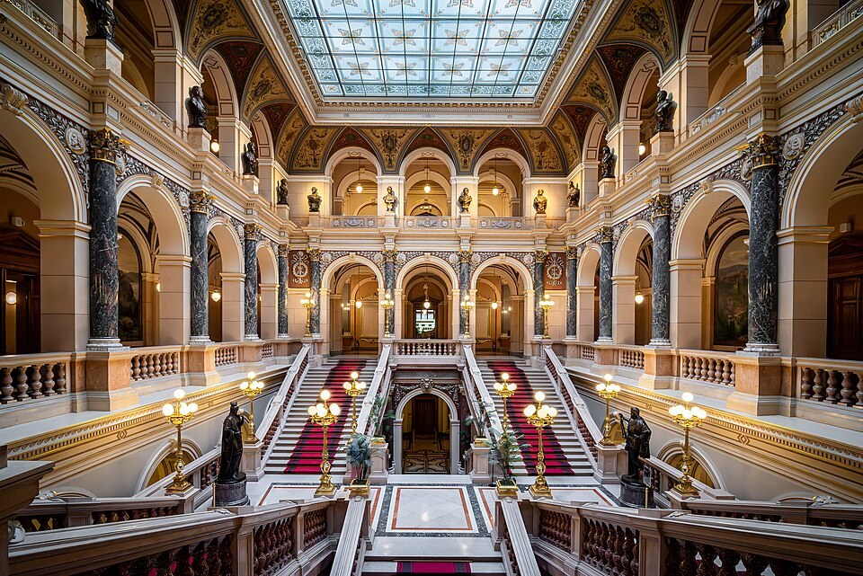

Nemzeti Múzeum (Národní muzeum)
A Nemzeti Múzeum történeti épületét a Vencel tér felső végén keressük. A magasabb pontra állított palota tudatosan zárja le a tér hosszú látványtengelyét. A kupola és a széles homlokzat a tudomány és a nemzeti kultúra rangját hirdeti. Már a megközelítés során érezhető, hogy az épületet a város egyik kiemelt jelképének szánták.
A múzeum intézménye 1818-ban jött létre. A neoreneszánsz palota később, a tizenkilencedik század végén készült el Josef Schulz tervei szerint. A gyűjtés és a tudományos munka ekkor szorosan összekapcsolódott a cseh kulturális önazonosság erősödésével. Az épület ezért nemcsak tárlók befogadására szolgált, hanem jelentést is adott a bennük őrzött tudásnak.
Belépve a díszlépcsőházat érdemes lassan megfigyelni. A lépcsők, oszlopok, festett felületek és kőburkolatok együtt ünnepi megérkezést szerveznek. A múzeumi látogatás így már jóval az első kiállítási tárgy előtt elkezdődik. A tér azt az érzést erősíti, hogy az ide belépő a közösen megőrzött kulturális örökséggel találkozik.
A Pantheon a jelentős történelmi és kulturális személyiségek emlékezetének külön tere. Szobrok és képek mutatják meg, kiket tartott fontosnak a közösségi emlékezés egy-egy korszaka. Ezt a válogatást történeti nézőpontként is érdemes szemlélni. A múzeum maga is alakítja a múlt képét, miközben őrzi annak tárgyait.
A nagy felújítás után az épület 2018-ban nyílt meg újra. A történeti és az új múzeumépületet később föld alatti kapcsolat is összekötötte. A látogatás ezért nem feltétlenül korlátozódik a tér fölé emelkedő régi palotára. Az aktuális kiállítások és a közlekedőterek egy tágabb múzeumi együttest alkotnak.
A kupola különösen szép kilátást kínálhat, de látogathatóságát nem szabad automatikusan minden jegyhez feltételezni. A felső részek megközelítése a helyi rendhez és az egyéni mozgási lehetőségekhez igazodik. Kifelé újra nézzünk le a Vencel térre. A korábban végigsétált sugárút innen már az épület tudatos városképi kompozíciójának részeként jelenik meg.
50.078831, 14.430797